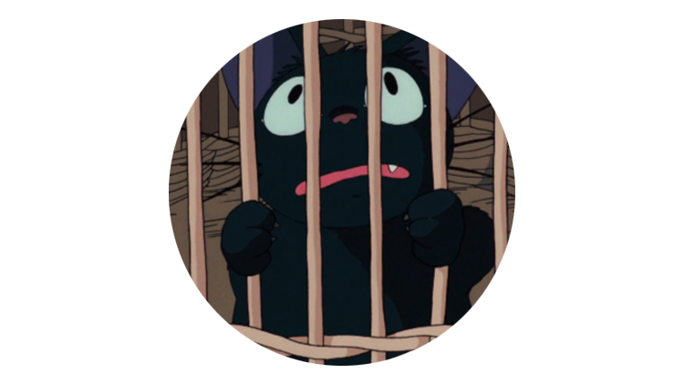

NEWS/STORY/CHARACTER/MOVIE/REVIEW
키키｜지지｜코포리

지지/ジジ
키키가 데리고 다니는 검은 고양이.
같은 고양이를 비롯해 다른 동물들과도 대화할 수 있으며 키키에게 이를 통역해주기도 하는 등 빗자루와 함께 키키가 마녀라는 사실을 상징적으로 드러낸다.
처음에는 키키와 대화할 수 있었지만, 작품 후반부터는 키키가 마녀의 능력이 일시적으로 약해져 지지의 말을 들을 수 없게 된다.
키키가 마법을 되찾은 직후에도 고양이 울음소리를 냈고 엔딩 크레딧 동안 대사가 등장하지 않아 결국 다시 말할 수 있게 되는지는 관객들의 해석의 차이로 남았다.
마키네 고양이 릴리와 처음부터 묘한 시선을 주고 받더니 결국 이어져 나중에는 4마리 새끼를 낳는다. 매우매우 귀엽다.
같은 고양이를 비롯해 다른 동물들과도 대화할 수 있으며 키키에게 이를 통역해주기도 하는 등 빗자루와 함께 키키가 마녀라는 사실을 상징적으로 드러낸다.
처음에는 키키와 대화할 수 있었지만, 작품 후반부터는 키키가 마녀의 능력이 일시적으로 약해져 지지의 말을 들을 수 없게 된다.
키키가 마법을 되찾은 직후에도 고양이 울음소리를 냈고 엔딩 크레딧 동안 대사가 등장하지 않아 결국 다시 말할 수 있게 되는지는 관객들의 해석의 차이로 남았다.
마키네 고양이 릴리와 처음부터 묘한 시선을 주고 받더니 결국 이어져 나중에는 4마리 새끼를 낳는다. 매우매우 귀엽다.